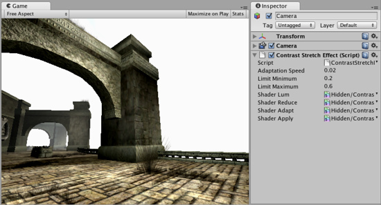

Contrast Stretch image effect
Contrast Stretch dynamically adjusts the contrast of the image according to the range of brightness levels it contains. The adjustment takes place gradually over a period of time, so the player can be briefly dazzled by bright outdoor light when emerging from a dark tunnel, say. Equally, when moving from a bright scene to a dark one, the "eye" takes some time to adapt.
As with the other image effects, this effect is only available in Unity Pro and you must have the Pro Standard Assets installed before it becomes available.
Understanding Contrast Stretch
The clarity of detail in an image is largely determined by the range of different brightness values it contains. It is difficult for the eye to distinguish between two brightness levels that differ by less than about 2% and above that, the greater the difference, the stronger the detail. The overall separation between the lightest and darkest values in an image is referred to as the contrast of that image.
It is common for an image to use less than the full range of available brightness values. One way to increase the contrast is to redistribute the pixels' values so as to make better use of the range. The darkest level in the original image is remapped to a even darker level, the brightest to a brighter level and all the levels in between are moved farther apart in proportion. The distribution of levels is then "stretched" out farther across the available range and thus this effect is known as contrast stretch.
Contrast stretching is evocative of the way the eye adapts to different light conditions. When walking from an outdoor area to a dimly lit building, the view will briefly appear indistinct until the contrast is stretched to reveal the detail. When emerging from the building, the contrast stretch will have the effect of making the outdoor scene appear dazzling bright until the "eye" of the player adjusts.

No Contrast Stretch applied.

Contrast stretch applied with a dark skybox. Note that buildings get brighter.

Contrast stretch applied with a very bright skybox. Note that buildings get darker.
Contrast stretch applied with a very bright skybox. Note that buildings get darker.
Properties
| Adaptation Speed | The speed of the transition. The lower this number, the slower the transition |
| Limit Minimum | The darkest level in the image after adjustment. |
| Limit Maximum | The brightest level in the image after adjustment. |
Tips:
- Since Constrast Stretch is applied over a period of time, the full effect is only visible in Play mode.
Hardware support
This effect requires a graphics card with pixel shaders (2.0) or OpenGL ES 2.0. PC: NVIDIA cards since 2003 (GeForce FX), AMD cards since 2004 (Radeon 9500), Intel cards since 2005 (GMA 900); Mobile: OpenGL ES 2.0; Consoles: Xbox 360, PS3.
All image effects automatically disable themselves when they can not run on end-users graphics card.
Page last updated: 2011-09-20